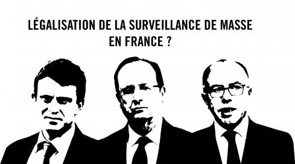

Alors qu’en 2015, le Parlement britannique faisait voter un texte encadrant les pratiques de ses propres services secrets (le GCHQ, principal allié de la NSA), la même année est né en France un projet de loi introduisant un nouveau dispositif de surveillance de masse. En juin 2015, le parlement a officiellement adopté après un ultime vote de l’Assemblée le projet de loi “relative au renseignement” défendu au nom de “la lutte antiterroriste par le gouvernement”.
La loi prévoit un certain nombre de mesures de renseignement dont certaines étaient déjà utilisées de manière officieuse. D’autres mesures ont été ajoutées telles que la collecte des données de connexion (dites méta-données), de la « sonorisation » (c'est-à-dire des écoutes), de l' interception des communications électroniques, et de la surveillance des communications internationales, via l'interception des communications transitant par les câbles transocéaniques. Ce projet de loi de grande ampleur remplace donc la Commission Nationale de Contrôle des Interceptions de Sécurité (CNCIS) qui était régie par une Commission Nationale de Contrôle des Techniques de Renseignement (CNCTR).
L’article 2 de la loi prévoit les cas où ces mesures pourront être prises :
Cette frise chronologique synthétise les étapes les plus importantes du processus de légifération sur le renseignement et la surveillance de masse.
Il est particulièrement notable qu’en dépit des révélations de Wikileaks sur les écoutes de la NSA visant les trois derniers présidents français, le texte en l’état élargit considérablement les pouvoirs des services de renseignement français au nom de la lutte antiterroriste.
Mais pas seulement, puisqu’elle va au-delà des seules affaires de terrorisme et même de crime organisé. Elle implique également le renseignement économique, les « intérêts majeurs de la politique étrangère » (notion d’ailleurs peu définie juridiquement) et même les « violences collectives de nature à porter gravement atteinte à la paix publique », notion qui pourrait s'appliquer à de simples manifestations selon plusieurs syndicats (CGT, Syndicat de la magistrature, etc.)
On peut également noter que cette loi a été très rapidement mise au centre du débat et qu’elle a suscité une grande controverse, à la fois au sein des médias mais aussi au cœur de l’opinion publique. Tout au long de l'examen de la loi sur le renseignement par l’Assemblée nationale, la société civile a demandé un débat et des garanties sur le texte.
Une partie de la loi explicite qu’ en cas d’urgence absolue, le gouvernement pourra se passer de tout contrôle, c’est-à-dire de la Commission Nationale de Contrôle des Techniques de Renseignement (CNCTR), censée être indépendante et dont le rôle est d'empêcher toute dérive du gouvernement envers la vie privée des personnes. Il est donc très simple pour le gouvernement d’activer la loi en prônant une “urgence absolue” pour se passer de la CNCTR, point qui a d’ailleurs été soulevé par les opposants à la loi.
Les boites noires ont tout de même été activées en novembre 2017, faisant suite à une annonce par le président de la Commission Nationale de Contrôle des Techniques de Renseignement (CNCTR). Selon la CNCTR, seule une boîte noire est actuellement expérimentée et n’est autorisée que pour deux mois. L'extension du dispositif est soumise à un avis de la CNCTR transmis au Premier ministre, qui est libre de le suivre ou non.